Indigo Design Awards
Gold Award in UX, Interface & Navigation 2020, Non-Pro
Silver Award in Digital Tools and Utilities 2020, Non-Pro
Bronze Award in Interactive Design 2020, Non-Pro
Honorable Mention in Website Design 2020, Non-Pro
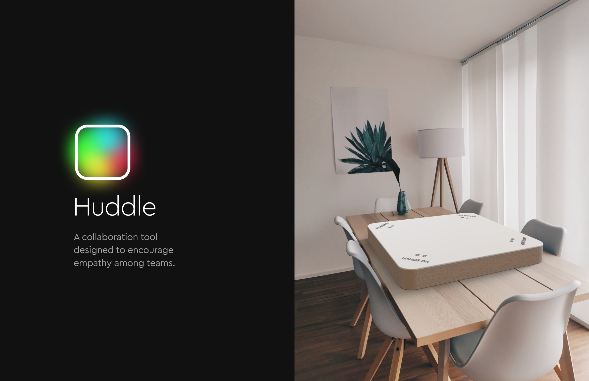
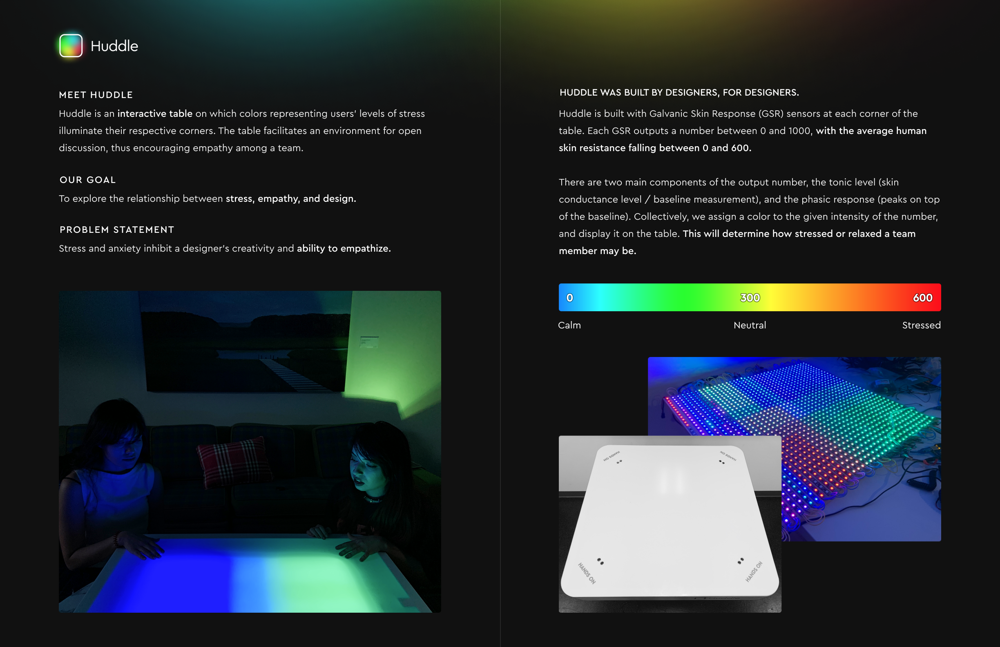
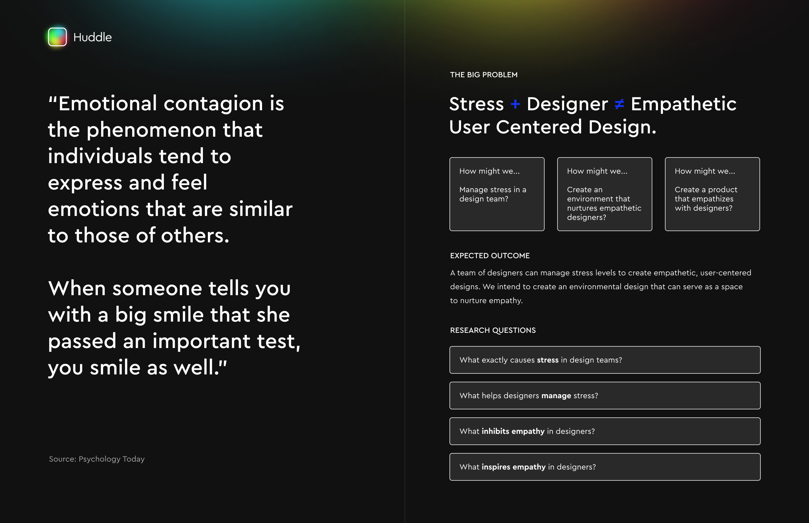
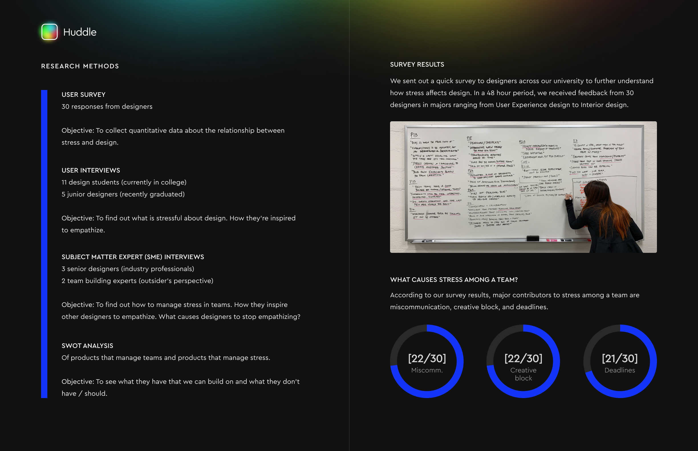
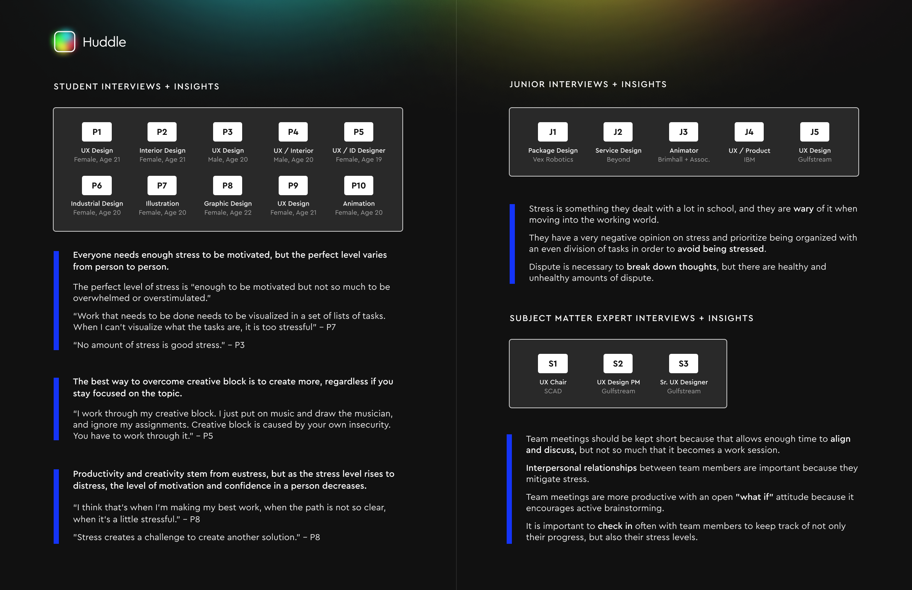
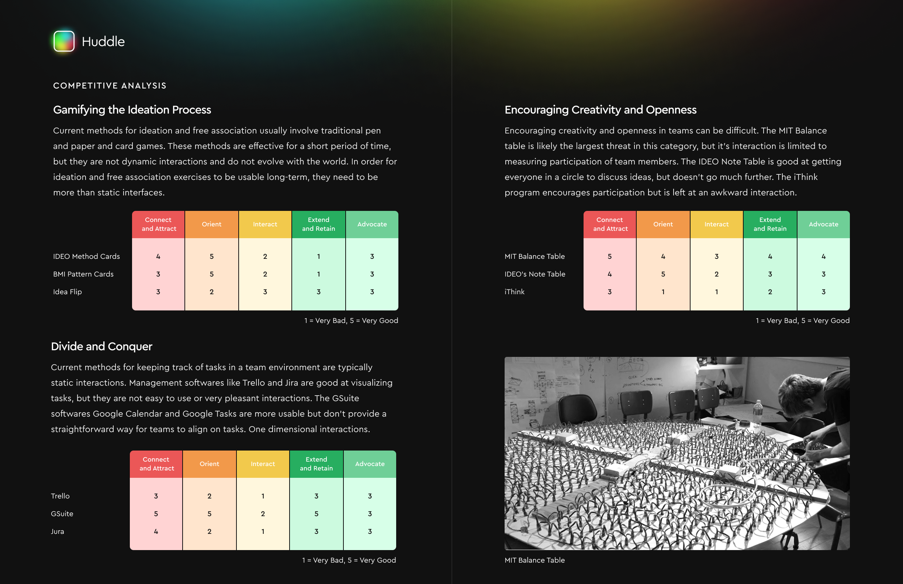
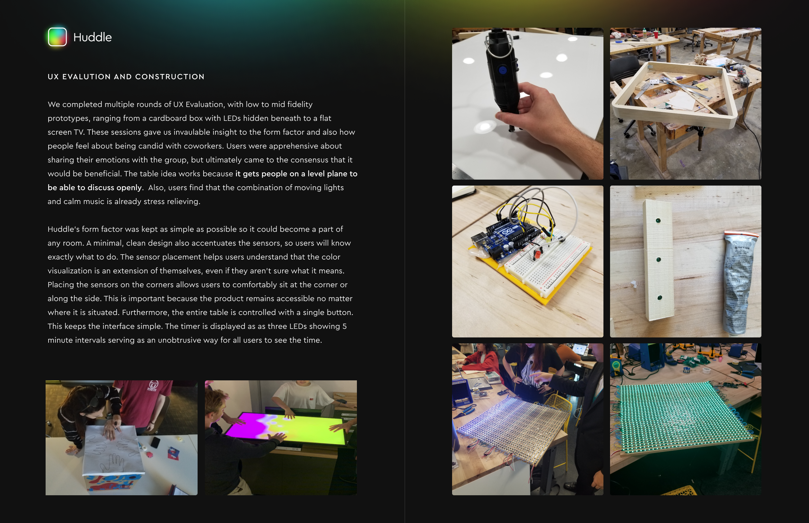
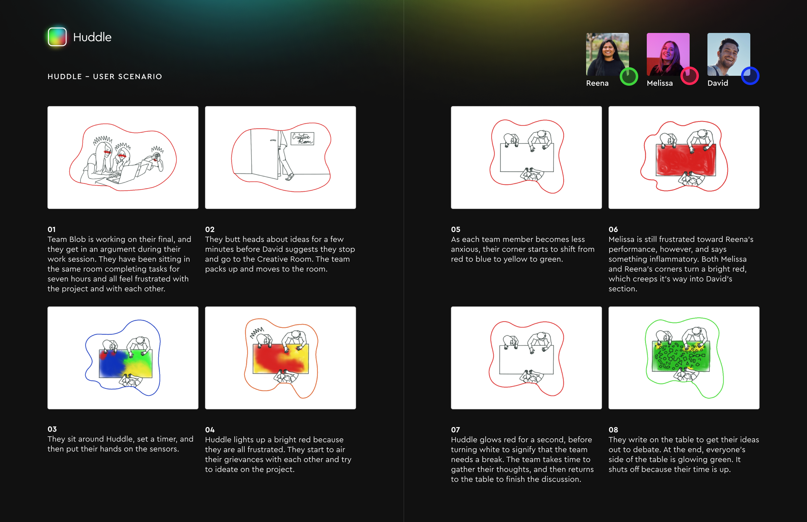
 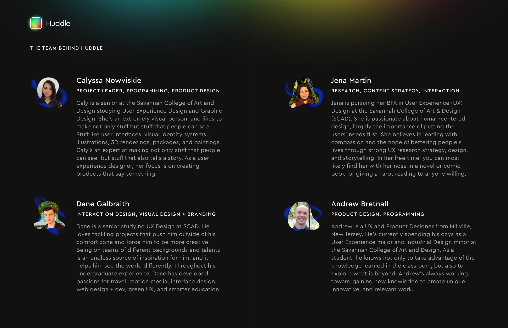
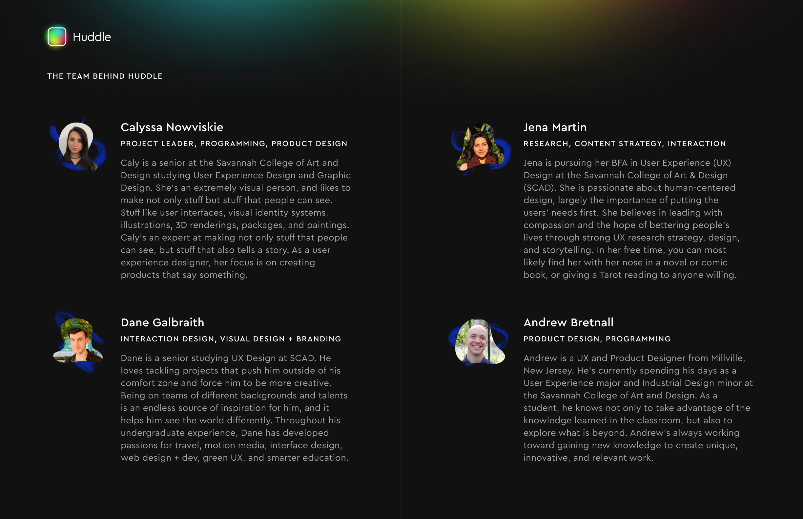
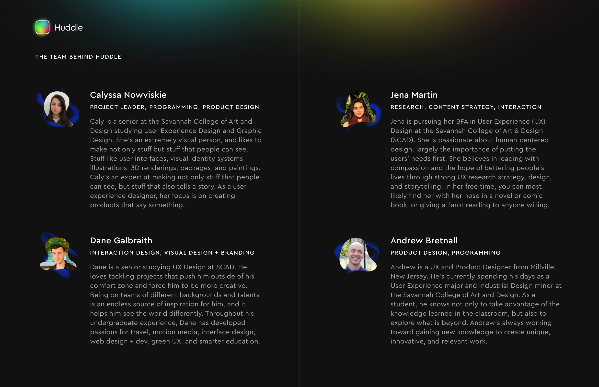